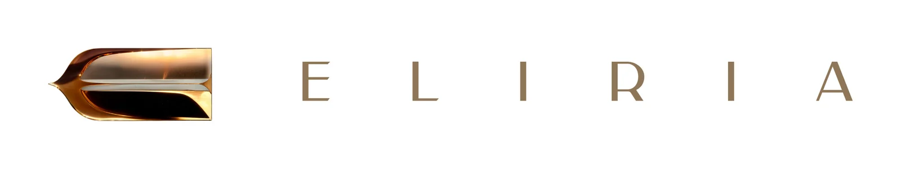
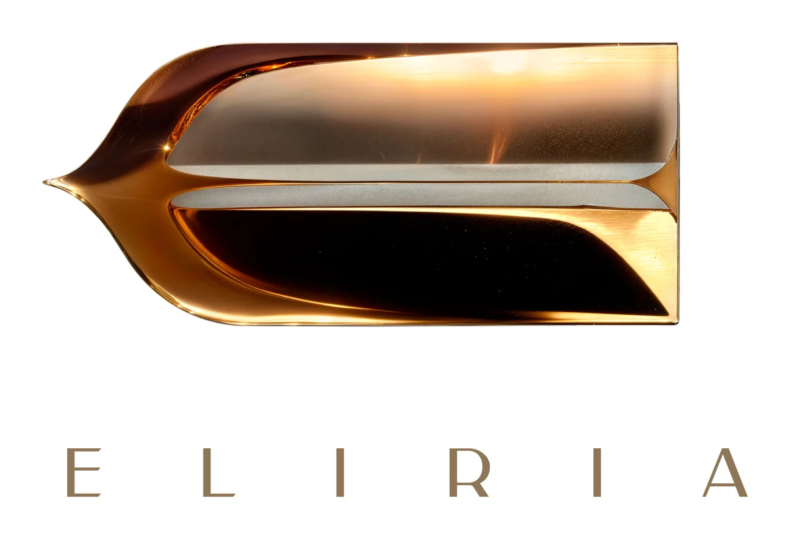
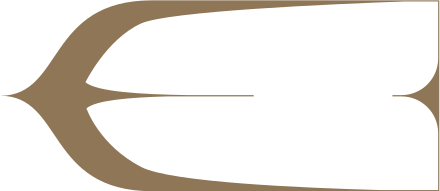
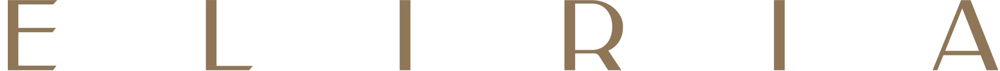

Em uma página
O essencial, para quem só tem um minuto.
Diferenciamos ocasiões com alta classe.
Ligando gestos de reconhecimento no tempo.

Azul marítimo, verde musgo, vermelho bordô, ouro.
Playfair Display e Montserrat
Carla Sans só na assinatura.
O mar canta para o Altíssimo.
Mensagem
A direção da marca em uma frase, e o que cada parte do nome carrega.
- Verbo
- Diferenciamos
- Razão de ser
- ocasiões com alta classe,
- Benefício principal
- ligando gestos de reconhecimento no tempo.
- Benefícios
- Criar expectativa
- Eliminar o trabalho de escolha
- Elevar a relevância dos eventos
- Aprofundar a exclusividade das ocasiões
- Oferecer coleções anuais limitadas
- Trocar convites por joias
- Em uma linha
- Vincular ocasiões e joias exclusivas.
THALLA
Do grego thalassa ou thalatta, o mar: infinito, continuidade e mistério. Thallo quer dizer «eu irei». O som evoca elegância e prestígio.
ELIRIA
De Eli, raiz hebraica que significa «ascendido» ou «meu Deus», sinal de liderança, e de lyrikos, a poesia feita para ser cantada com a lira. Autoridade e elegância poética.
O mar canta para o Altíssimo.
A marca
Cinco versões, cada uma com uma função. O símbolo em ouro é uma peça de metal fotografada, não um desenho: por isso existe também uma versão vetorial em uma cor, para gravar, estampar e bordar.

Principal
O símbolo em ouro. É a marca em sua forma mais completa: use sempre que a peça for vista de perto e a imagem puder ser impressa ou exibida em cor.
Para: site, redes, embalagem, peças de destaque

Assinatura vertical
O símbolo sobre o nome. A versão de apresentação, para quando há espaço em torno.
Para: capas, convites, certificados
Assinatura horizontal
O símbolo ao lado do nome. Para faixas estreitas, onde a vertical ficaria pequena demais.
Para: cabeçalho do site, assinatura de e-mail, rodapés

Símbolo em uma cor
O desenho vetorial do símbolo, em uma só cor. É a versão que vai para o metal, o couro e o tecido.
Para: gravação, relevo seco, carimbo, bordado, favicon
Padrão
O símbolo em grade, com uma linha fina entre cada um. Um fundo, nunca a marca em si.
Para: interior de estojos, papel de seda, verso de cartões
- Área de proteção Sugestão Deixe livre em volta da marca, de cada lado, metade da altura do símbolo. Nada entra nesse espaço.
- Tamanho mínimo Sugestão O símbolo em ouro, no mínimo 120 px de largura na tela e 25 mm no papel. Abaixo disso o brilho vira mancha: use o símbolo em uma cor.
- Fundo O ouro funciona melhor sobre azul marítimo, sobre preto ou sobre papel claro. Evite fundos com fotografia atrás do símbolo.
- Não altere Não gire, não estique, não troque a cor do ouro, não acrescente sombra nem contorno.
Cores
Quatro cores, cada uma com um sentido. O ouro é o da assinatura, lido nos arquivos da marca. Os valores das outras três são a proposta do estúdio para os nomes que o projeto definiu. Sugestão
Azul marítimo
O fundo da marca. O mar de Thalla.
HEX #16263A · RGB 22 38 58
Verde musgo
Apoio. Natureza e permanência.
HEX #3F4A33 · RGB 63 74 51
Vermelho bordô
Destaque raro. Selos, fitas, lacres.
HEX #5C1F2B · RGB 92 31 43
Ouro
A assinatura. Lido nos arquivos.
HEX #8E7657 · RGB 142 118 87
Azul marítimo como fundo, ouro na marca e nos detalhes, bordô em um ponto só. O verde musgo entra no lugar do azul quando a peça pede natureza.
- Texto pequeno não vai em ouro sobre papel claro. O contraste não chega ao que a leitura pede. Ouro é para a marca, títulos grandes e filetes.
Tipografia
Três famílias no dia a dia e uma reservada para a assinatura. As funções de cada uma são a proposta do estúdio. Sugestão

Carla Sans
Só a assinatura, com espaçamento largo entre as letras. Não use em textos: o nome é desenhado, não digitado.
Coleções oficiais, legado presente.
Playfair Display
Títulos, nomes de coleções, frases curtas. O itálico para uma palavra que pede ênfase.
Cada peça é gravada com o ano e as iniciais do anfitrião.
EDIÇÃO 2026 · Nº 007 / 120
Open Sans
Apoio técnico: numeração de peças, certificados, tabelas. As versões condensadas cabem em espaços estreitos.
Imagens
Os motivos que a marca pode usar, cada um com o que significa. Uma peça escolhe um motivo, nunca vários.
Águas
Leveza e flexibilidade
Pássaros
Leveza e precisão
Brasões
Família e estabilidade
Veado
Liberdade e bondade
Cavalos
Liberdade e poder
Chaves
Segredo e escassez
Flores
Beleza e leveza
Coroas
Status e vitória
Estrelas
Divindade e escassez
Borboletas
Leveza e fragilidade
Leões
Status e poder
- Fotografia Sugestão Luz baixa e quente, fundo escuro, a peça em primeiro plano. O ouro precisa de sombra para brilhar.
Voz
Como a marca fala. Sugestão
Pouco e exato
Frases curtas. Um fato por frase. A marca não explica o luxo, mostra.
Tempo, não moda
Fala de legado, ano, ocasião e reconhecimento. Nunca de tendência ou novidade.
Reverência
Trata quem recebe a peça como convidado de honra. Sem pressa e sem preço em destaque.
coleção oficial · legado · reconhecimento · ocasião · gravado · numerado · exclusivo
promoção · desconto · barato · tendência · imperdível
Cuidados
A marca representa a identidade e os valores da Eliria. Antes de colocá-la em qualquer objeto, pense em onde ela vai parar.
Não pise na marca
Tapetes e capachos são pisados, sujos e gastos. A marca não vai onde alguém pode pisar.
Não descarte a marca
Nada de copos, guardanapos ou embalagens descartáveis, nem lixeiras. A marca não vai para o lixo.
Não exponha a marca
Nada de roupas íntimas ou objetos que a liguem a um contexto pessoal demais.
Não coma a marca
Nada de bolos, biscoitos ou alimentos. Uma marca mordida ou cortada perde a dignidade.
Aplicações
Onde a marca aparece primeiro, e a versão que cada lugar pede. Sugestão
A peça
Símbolo em uma cor, gravado. Ano e iniciais do anfitrião ao lado, em Open Sans.
Estojo
Azul marítimo por fora, símbolo em relevo seco. Padrão por dentro.
Certificado
Assinatura vertical no topo, número da peça em Open Sans condensada, lacre bordô.
Convite
Papel claro, assinatura vertical, Playfair Display para o nome da ocasião.
| Arquivo | Tamanho | Para |
|---|---|---|
| eliria_social_link_1200x630.png | 1200 × 630 | Prévia de link: WhatsApp, LinkedIn, Facebook |
| eliria_social_linkedin-banner_1128x191.png | 1128 × 191 | Capa da página da empresa no LinkedIn |
| eliria_social_square_1080x1080.png | 1080 × 1080 | Post quadrado |
| eliria_social_portrait_1080x1350.png | 1080 × 1350 | Post vertical no feed |
| eliria_social_story_1080x1920.png | 1080 × 1920 | Stories e Reels |
A foto de perfil é o símbolo em um quadrado azul marítimo, centralizado dentro do círculo.
Arquivos
Onde cada arquivo fica e como se chama, para que qualquer pessoa encontre o certo sem perguntar.
cliente_peça_versão_cor_tamanho.ext
Minúsculas, sem acentos, sem espaços. Exemplo: eliria_mark_primary_gold_1200w.png. Nada de data ou versão no nome: um arquivo novo substitui o antigo no Drive, e o antigo vai para 99 Archive.